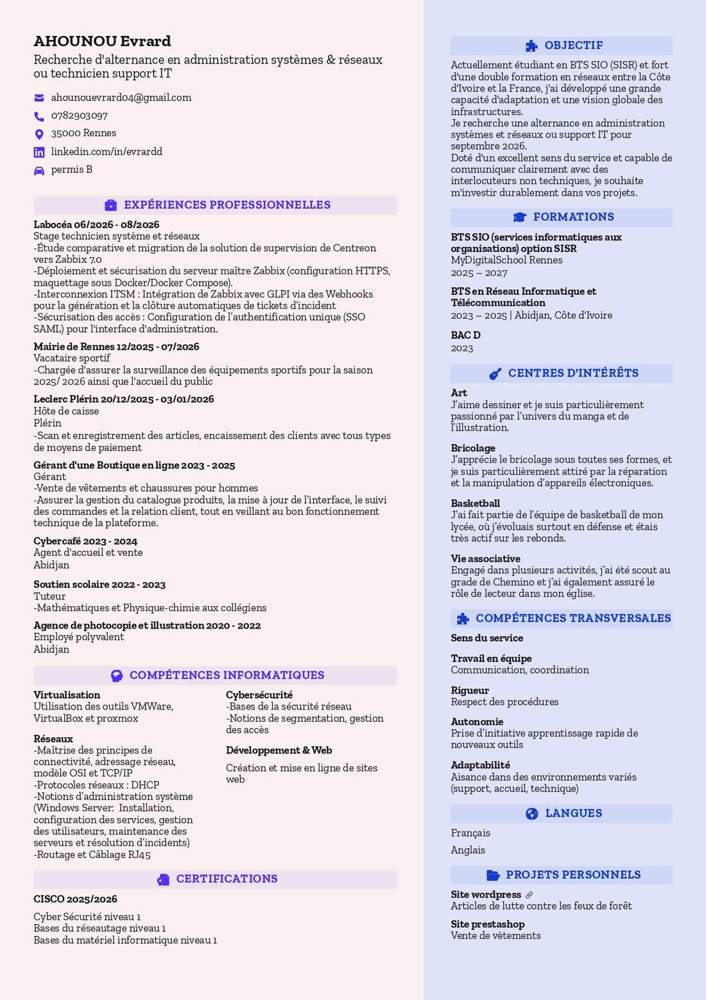

Hardware
Portfolio · Session 2025-2027
Bonjour,
je m'appelle AHOUNOU Evrard
Étudiant en BTS SIO, option SISR — passionné par l'administration réseau, la virtualisation et la cybersécurité. À la recherche d'une alternance pour mettre mes compétences techniques au service d'une infrastructure IT.
3
Certifications Cisco
8
Projets & réalisations
SISR
Option choisie
Ce que je fais
Réseaux & Infrastructure
Administration et configuration d'équipements réseaux. Conception et simulation d'infrastructures d'entreprise interconnectées et sécurisées.
Cybersécurité
Mise en œuvre des bonnes pratiques de sécurité informatique. Veille sur les vulnérabilités (CVE), application des directives de l'ANSSI et sécurisation des accès.
Systèmes & Web
Administration de serveurs (Windows/Linux), virtualisation, ainsi que déploiement et maintenance d'applications et sites web dynamiques.
À propos
Présentation
Je m'appelle AHOUNOU Evrard, étudiant en BTS SIO (Services Informatiques aux Organisations), option SISR. Je me forme à l'administration des réseaux, à la virtualisation, à la cybersécurité et à la gestion d'infrastructures. J'aime apprendre en pratiquant et je construis progressivement mes compétences à travers des projets concrets.
Mon objectif est de devenir un professionnel compétent et polyvalent dans le domaine de l'informatique, capable de gérer des systèmes complexes et de contribuer à la transformation numérique des organisations.
Formation
BTS SIO — Option SISR
Centre de formation
My Digital School Rennes
Session
2025 - 2027
Compétences
Mes compétences
Réseaux & Systèmes
Administration réseaux
Protocoles TCP/IP
Gestion DNS
Windows Server
Linux / Linux Server
Active Directory
Virtualisation (Proxmox, VMware, VirtualBox)
Gestion de parc & helpdesk
Supervision & Automatisation
Supervision (Centreon, Zabbix)
Conteneurisation (Docker)
Gestion de configuration (Ansible)
Git / GitHub
Sécurité
Cybersécurité
Bonnes pratiques ANSSI / CERT-FR
Pare-feu (pfSense)
VPN
Sauvegarde
Outils & Environnements
Cisco Packet Tracer
Cisco NetAcad
VMware Workstation
VirtualBox
Réalisations
Projets
Hardware
Hardware
Montage d'un serveur Proxmox
Software
Software — Portfolio
Projet complet : HTML / CSS / Design / Responsive
Migration & Déploiement
Stages
Stage 1ʳᵉ année
Modernisation de la supervision et interconnexion ITSM (IT Service Management, gestion des services informatiques) chez Labocéa
Voir le documentStage 2ᵉ année
À venir…
BTS SIO — Épreuve E5
Tableau de synthèse
Nom
AHOUNOU Evrard
Centre
My Digital School Rennes
Option
SISR
Session
2025 - 2027
Information & Sécurité
Veille technologique
Sujet de veille
Suivi régulier des évolutions en cybersécurité, des nouvelles vulnérabilités (CVE) et des recommandations de l'ANSSI, afin d'anticiper les risques et d'appliquer les correctifs et bonnes pratiques adaptés à une infrastructure d'entreprise.
Sources suivies
Ma méthode
- Collecter — consulter les avis et bulletins
- Trier — évaluer la criticité (score CVSS)
- Analyser — vérifier l'impact sur mes systèmes
- Appliquer — correctifs et mesures de protection
Badges & diplômes
Certifications
Document
Curriculum Vitae

Échangeons
Contact
Informations
Mentions légales, confidentialité & crédits
Éditeur du site
Site personnel à but pédagogique et professionnel, édité par AHOUNOU Evrard, étudiant en BTS SIO option SISR à My Digital School Rennes. Contact : ahounouevrard04@gmail.com.
Hébergement
Site hébergé par GitHub Pages — GitHub, Inc., 88 Colin P. Kelly Jr. Street, San Francisco, CA 94107, États-Unis.
Données personnelles
Le formulaire de contact collecte votre nom, votre adresse email et votre message dans le seul but de vous répondre. Ces informations sont transmises via le service Formspree et ne sont ni revendues ni utilisées à d'autres fins. Vous pouvez demander leur suppression à tout moment en écrivant à l'adresse ci-dessus. Ce site ne dépose pas de cookies de suivi publicitaire.
Crédits et licences
Icônes : Font Awesome (licence CC BY 4.0). Polices : Poppins et DM Sans via Google Fonts (licence SIL OFL). Photos et captures : réalisations personnelles. Les marques citées (Cisco, Proxmox, Docker, etc.) appartiennent à leurs propriétaires respectifs.